FLAM Detection Results on Real-world Examples
Sound Event Detection Results
ASFX-SED Dataset
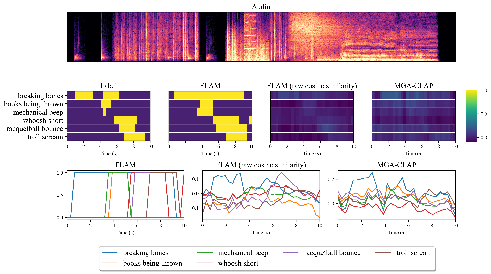
(a)
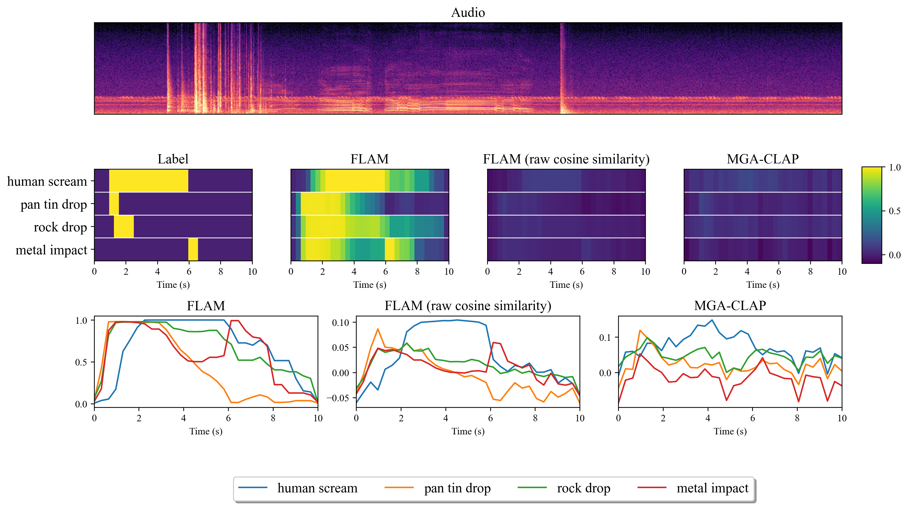
(b)
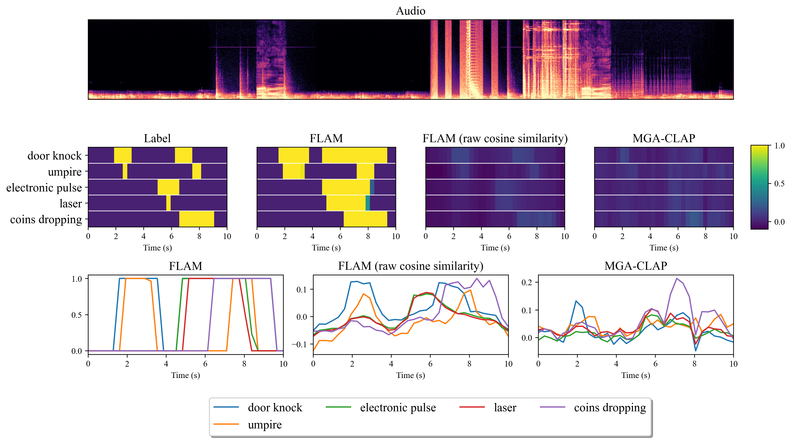
(c)
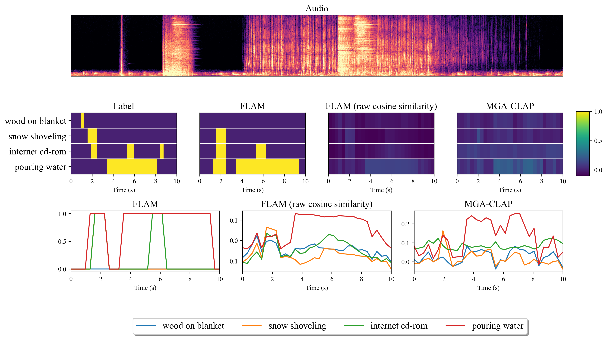
(d)
Sound event detection of FLAM on ASFX-SED dataset
Synthetic Held-out Dataset
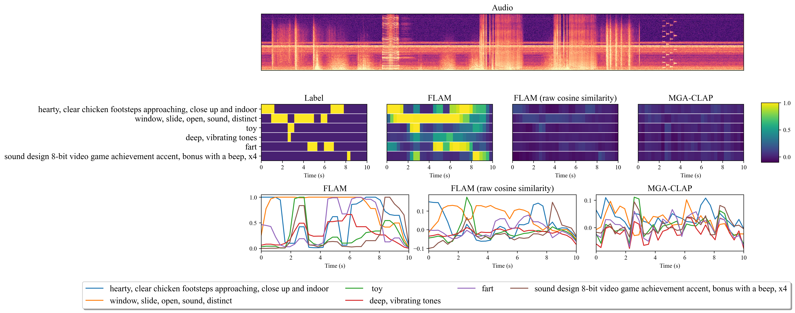
(a)
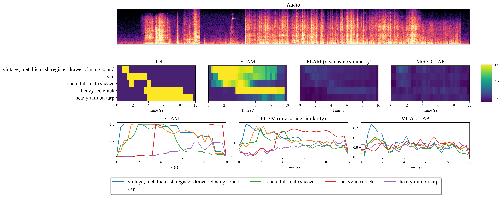
(b)
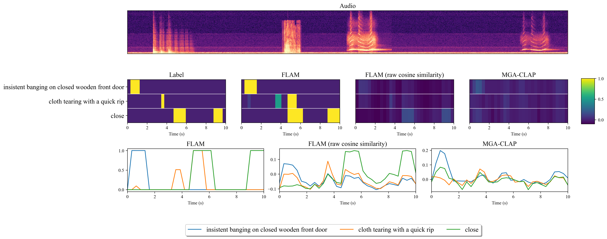
(c)
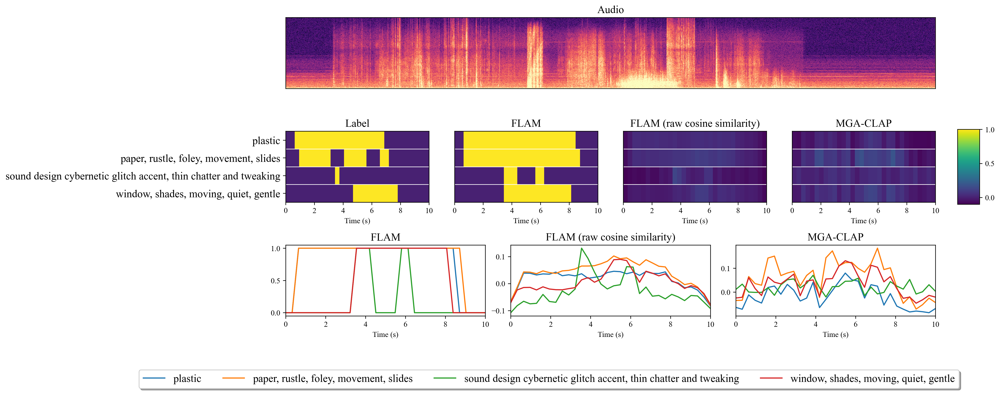
(d)
Sound event detection of FLAM on synthetic held-out dataset
Audioset-Strong Dataset
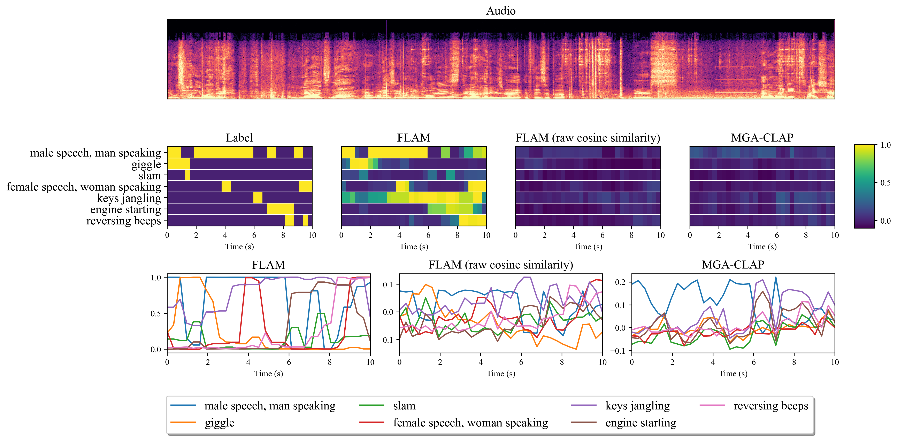
(a)
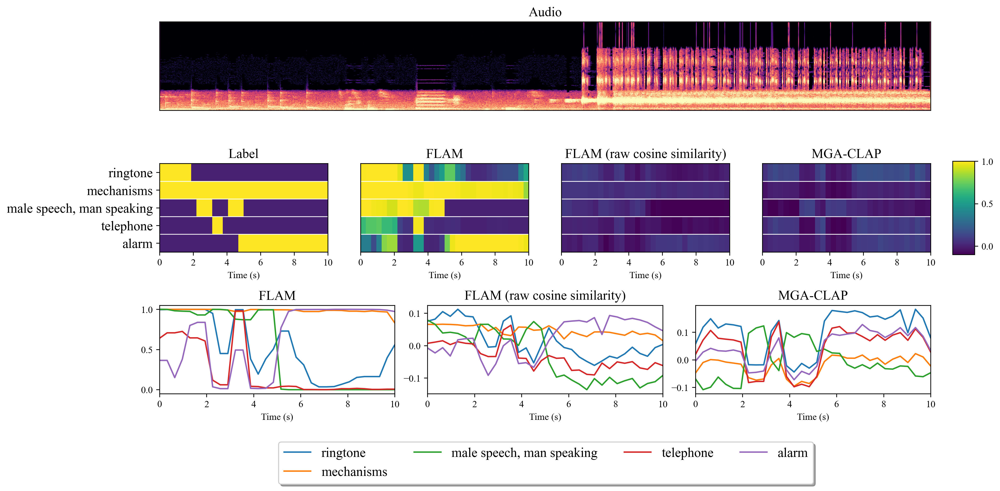
(b)
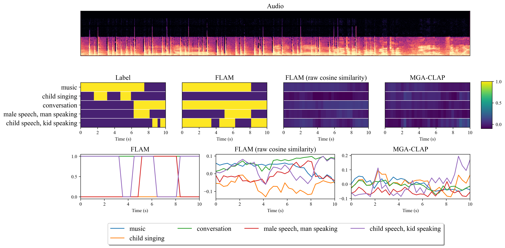
(c)
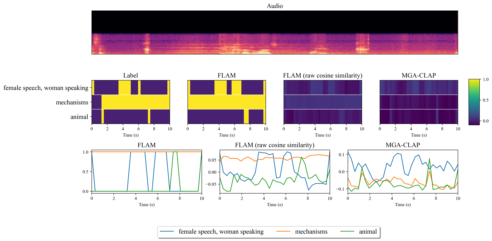
(d)
Sound event detection of FLAM on Audioset-Strong dataset